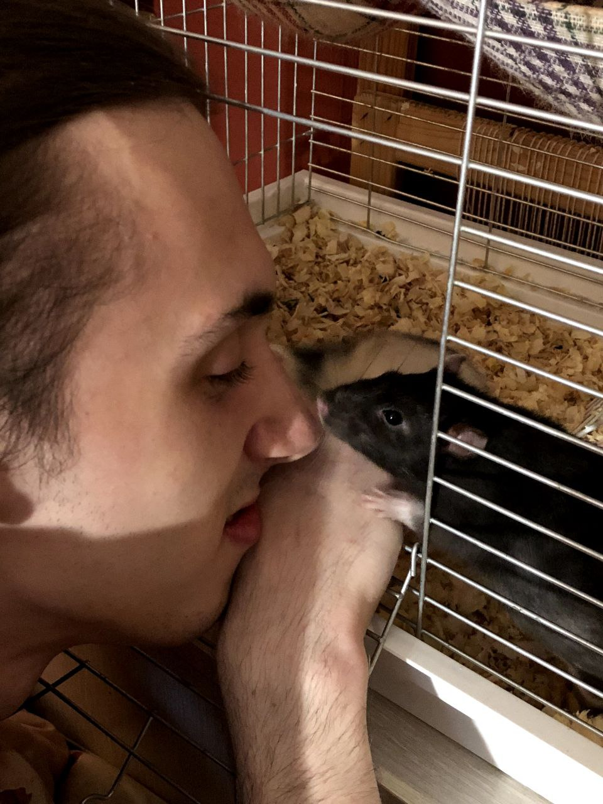
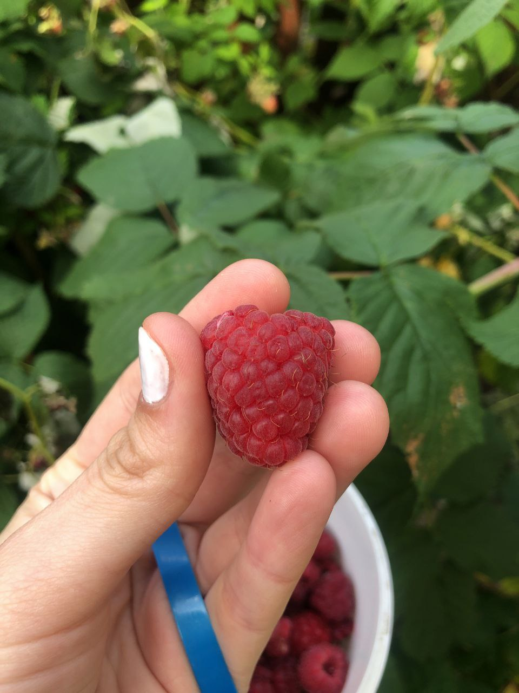
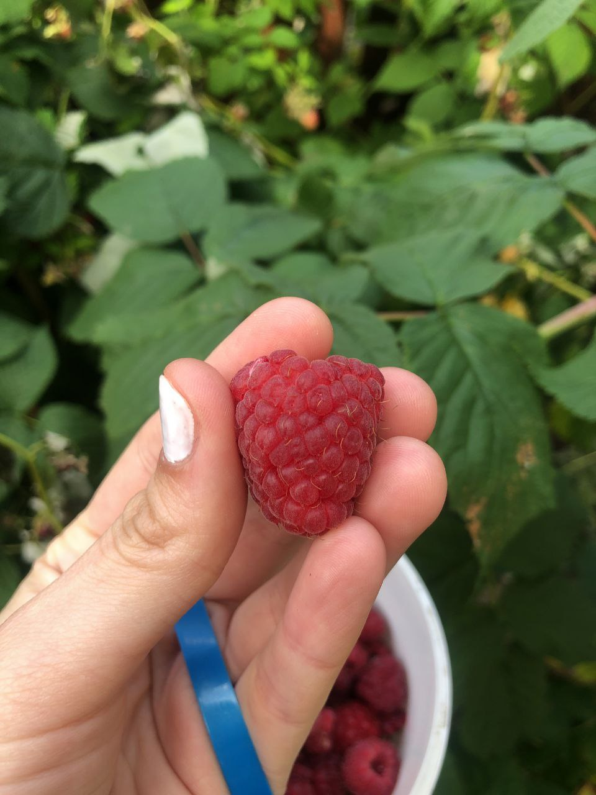

ты с Бонитткой

теперь с крысюками


смешной такой сякой


много едыыыыы

спишь)


наша первая поездка в Карпаты


еще смешнявый
 

делала тебе джем


красивая весна и лето


приезжали мои родители и мы поехали в Ровно


крыски и Боня


красивые цветочки для меня и переезд к тебе
делаешь вино


<3

фоточки


мега красивенький
та самая заветная ПОПА